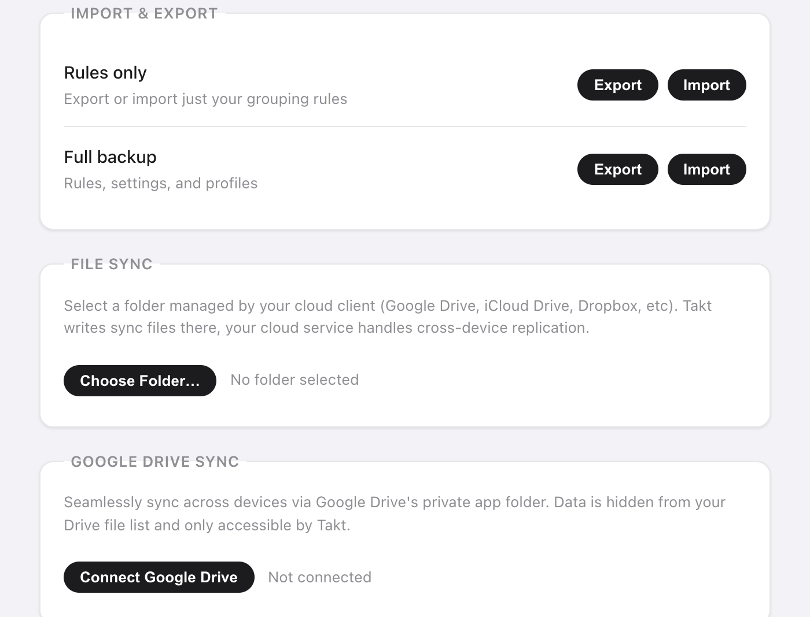

Respuesta corta: abre la página de opciones de Takt, ve a Settings y elige una opción:
- Export a un archivo JSON: solo reglas o una copia de seguridad completa.
- File Sync: Takt escribe en una carpeta que Google Drive, Dropbox o iCloud Drive sincronizan por ti.
- Drive Sync: Takt sincroniza con una carpeta oculta de la app en tu Google Drive, cada 15 minutos.
Las tres son Premium. Ninguna envía tus datos a un servidor de Takt.
¿Por qué no se sincronizan mis grupos de pestañas de Chrome?
La sincronización de grupos de pestañas de Chrome confunde a mucha gente. Hay dos detalles que suelen fallar:
- Hay que activar "Saved tab groups" en los ajustes de sincronización de cada dispositivo.
- Un grupo sincronizado aparece en la barra de marcadores. No se abre solo.
Si solo quieres unos cuantos grupos en un segundo ordenador, revisa primero ese ajuste. Es gratis y viene integrado.
Takt resuelve otro problema. No sincroniza tus pestañas abiertas en tiempo real. Sincroniza la configuración que hay detrás: tus reglas, perfiles, sesiones guardadas y pestañas hibernadas. Tus reglas reconstruyen los mismos grupos en cada ordenador mientras navegas. Una sesión guardada vuelve a abrir todo un espacio de trabajo cuando se lo pides.
¿Cómo hago una copia de seguridad de mis pestañas y reglas en un archivo?
En Settings → Import & Export tienes dos filas:
| Opción | Archivo | Contiene |
|---|---|---|
| Rules only | takt-rules.json | Tus reglas de agrupación |
| Full backup | takt-backup.json | Reglas, configuración, perfiles, sesiones guardadas y pestañas hibernadas |
Usa Rules only para compartir un conjunto de reglas con un compañero. Usa Full backup antes de reinstalar Chrome o de cambiar de ordenador.
Al importar, los archivos tienen un límite de 5 MB. Las reglas y sesiones se añaden junto a las que ya tienes, y se omiten las que tengan un nombre que ya usas. Una copia de seguridad completa también sustituye tu configuración y tus perfiles por los del archivo.

¿Cómo sincronizo con Dropbox, iCloud o una carpeta de Google Drive?
Usa File Sync. Takt escribe archivos JSON normales en la carpeta que elijas. Tu cliente de nube los sube como cualquier otro archivo.
- Haz clic en Choose Folder… y elige una carpeta dentro de tu carpeta de Drive, Dropbox o iCloud Drive, por ejemplo
Dropbox/Takt/. - Haz clic en Sync Now. Takt escribe
rules.json,profiles.json,sessions.json,hibernated.jsonymeta.json. - Marca Auto-sync on every change para que los archivos se reescriban unos 2 segundos después de tu último cambio.
- En el otro ordenador, haz clic en Import from Folder y elige la misma carpeta sincronizada.
No hay que iniciar sesión, y puedes abrir los archivos y leerlos. Sirve cualquier servicio en la nube con carpeta de escritorio.
La contrapartida: va en un solo sentido por ordenador. Cada ordenador escribe su propia copia, y los datos de otro ordenador los traes con Import from Folder. Si Chrome pierde el acceso a la carpeta, Takt muestra un botón Re-authorize.
¿Cómo funciona la sincronización con Google Drive?
Haz clic en Connect Google Drive e inicia sesión una vez. Takt guarda sus archivos en la carpeta oculta de apps de Drive. Está separada de tus archivos de Drive y no aparece en la interfaz de Drive.
Takt solo pide dos permisos a Google:
- Datos de aplicación de Drive: leer y escribir en una carpeta que solo Takt puede ver. No puede listar ni abrir tus otros archivos.
- Dirección de correo: para mostrar qué cuenta está conectada.
Marca Auto-sync every 15 minutes y Takt sincroniza en segundo plano. En un ordenador nuevo, conecta la misma cuenta y haz clic en Force Pull para sustituir sus reglas, perfiles y sesiones por la copia de Drive. Force Push hace lo contrario y sobrescribe Drive. Las dos acciones son inmediatas y no se pueden deshacer desde Takt.
¿Qué método me conviene?
| Sincronización de grupos de Chrome | Exportación JSON | File Sync | Drive Sync | |
|---|---|---|---|---|
| Qué se transfiere | Grupos de pestañas guardados | Reglas o una copia de seguridad completa | Reglas, perfiles, sesiones, pestañas hibernadas | Reglas, perfiles, sesiones, pestañas hibernadas, configuración de hibernación |
| Automático | Sí | No | Escritura sí, importación a mano | Cada 15 minutos |
| Nube | Tu cuenta de Google | Ninguna | Cualquier carpeta sincronizada de escritorio | Solo Google Drive |
| Precio | Gratis | Premium | Premium | Premium |
Un detalle más: Takt guarda las reglas, la configuración y los perfiles en el almacenamiento sincronizado de Chrome, que sigue a tu cuenta de Chrome cuando la sincronización de Chrome está activada. Las sesiones y las pestañas hibernadas se quedan en local, así que para ellas necesitas uno de los métodos anteriores.
Lo que la copia de seguridad y la sincronización no hacen
- No hay réplica de pestañas en tiempo real. Las pestañas abiertas en un ordenador no aparecen en otro. Guarda una sesión y restáurala allí.
- Gana la última escritura. No se fusionan los cambios hechos en dos ordenadores a la vez. Elige un ordenador para editar, o envía y trae los datos de forma deliberada.
- Drive Sync es solo para Google. Usa File Sync para Dropbox, iCloud o cualquier otro servicio.
Configúralo una vez. Llévalo a todos tus ordenadores.
Añadir Takt a Chrome, gratisPreguntas frecuentes
¿Por qué no se sincronizan mis grupos de pestañas de Chrome?
Chrome necesita tener activado "Saved tab groups" en los ajustes de sincronización de cada dispositivo, y los grupos sincronizados aparecen en la barra de marcadores en lugar de abrirse solos.
¿Sincroniza Takt mis pestañas abiertas en tiempo real entre ordenadores?
No. Sincroniza tus reglas, perfiles, sesiones guardadas y pestañas hibernadas. Las reglas reconstruyen los mismos grupos en cada ordenador, y una sesión guardada vuelve a abrir todo un espacio de trabajo.
¿Puede Takt leer mis archivos de Google Drive?
No. Drive Sync solo usa el ámbito de datos de aplicación, una carpeta oculta que solo Takt puede ver, y tu correo para mostrar la cuenta conectada. Consulta cómo mantiene Takt tus datos en local.
¿La copia de seguridad y la sincronización son gratis?
No. La exportación e importación JSON, File Sync y Drive Sync son Premium, 3 $/mes o 30 $/año.